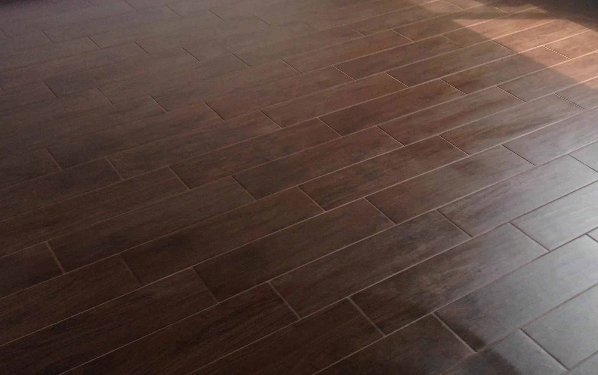
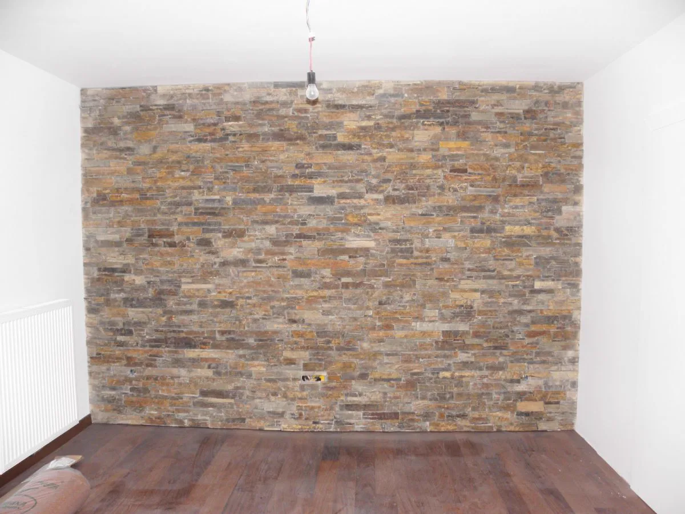
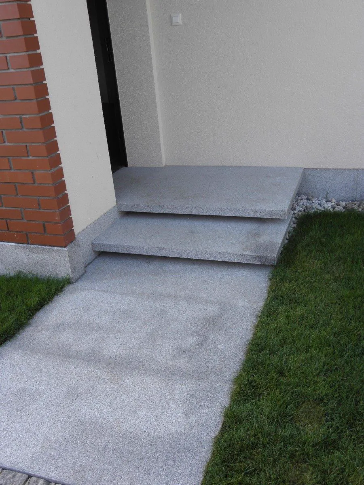
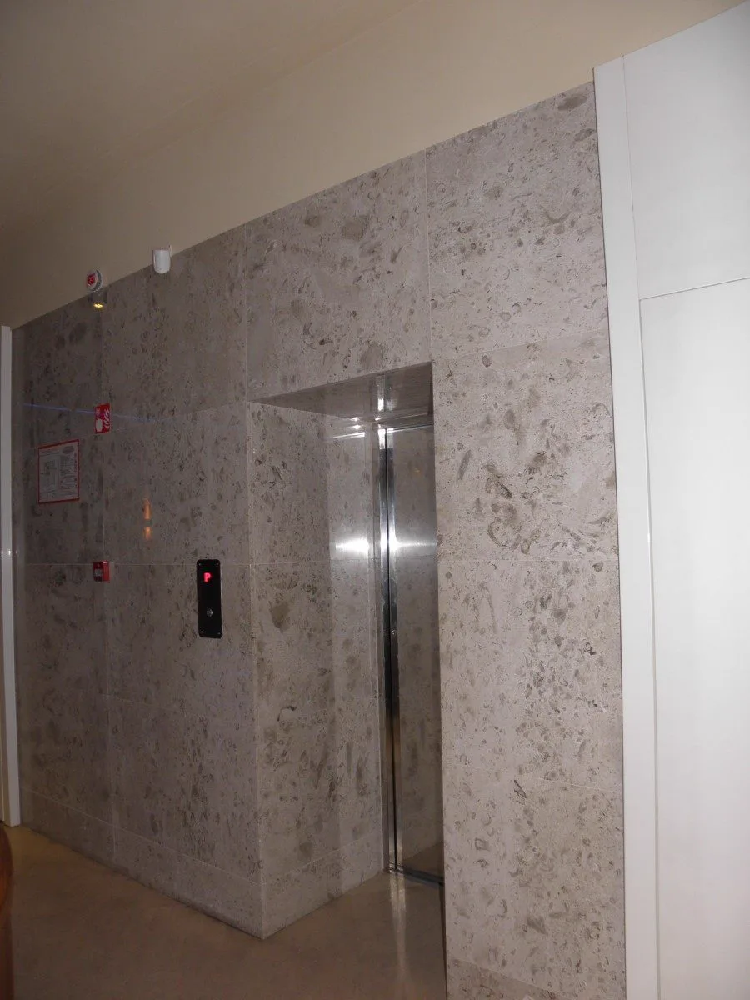
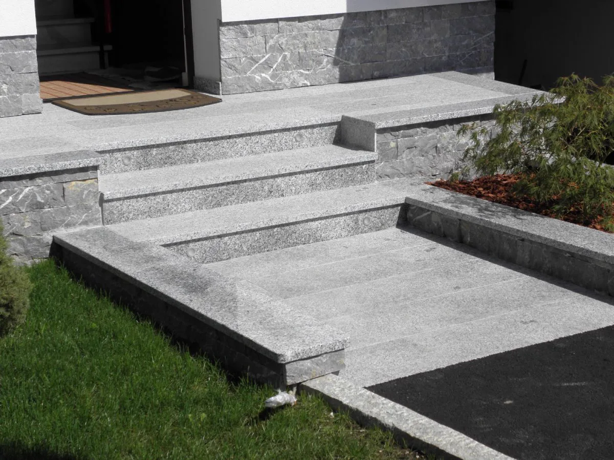
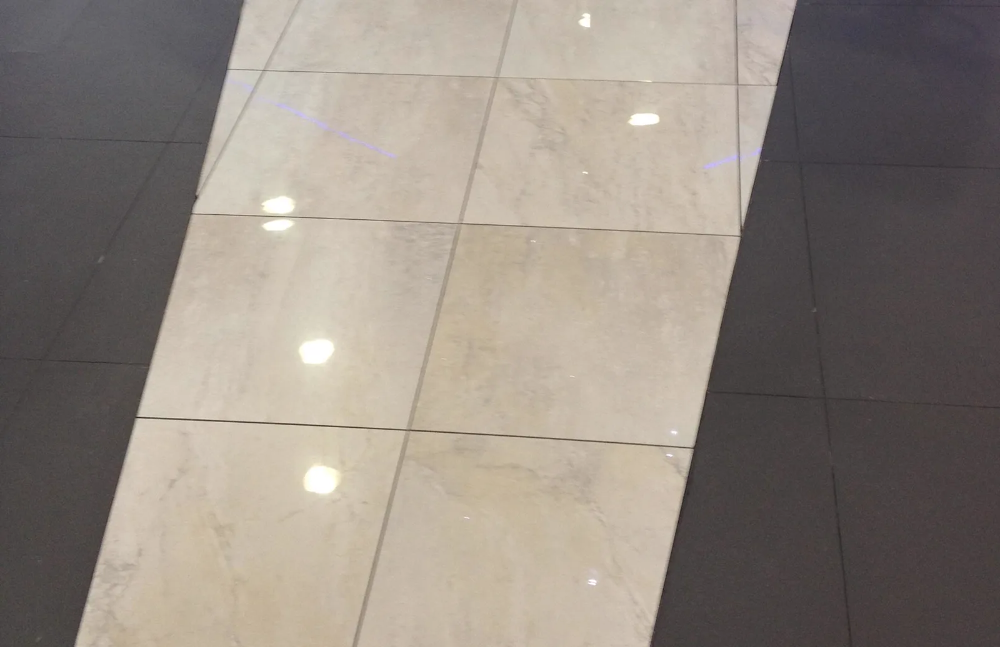

Prodaja keramike
Pri izbiri keramike vam strokovno svetujemo. Keramika je vedno na zalogi, po sistemu od proizvajalca direktno v vaš dom.
- ratificirana talna in stenska keramika
- zaščita proti zdrsu in zmrzali
- po želji dostavimo in položimo

Garvit je kamnoseštvo in keramičarstvo pod eno streho: svetujemo pri izbiri, keramiko imamo vedno na zalogi, kamen dostavimo, vse pa tudi strokovno položimo. Od kopalnice do hotelske avle.
Največ referenc ima podjetje iz naslova kamnoseštva in keramičarstva.
Smo odgovorni do naročnikov naših storitev. Delo opravimo hitro in strokovno. Strokovno svetujemo pri izbiri keramike in vseh vrst kamnov, marmorja in granita, izbrano keramiko pa imamo vedno na zalogi.
Naše storitve lahko brez zadržkov ponudimo tudi najbolj zahtevnim naročnikom, saj si prizadevamo za strokovno in kvalitetno opravljanje storitev brez reklamacij.
Pri izbiri keramike vam strokovno svetujemo. Keramika je vedno na zalogi, po sistemu od proizvajalca direktno v vaš dom.

Polaganje keramike opravimo hitro in kvalitetno. O usposobljenosti ekipe govorijo slike referenčnih objektov.

Pri izbiri kamna, granita, marmorja ali lomljenca vam strokovno svetujemo. Ves material dostavimo in položimo.
Izvajamo tudi vsa gradbena dela: novogradnje objektov, adaptacije in rušenje objektov, fasaderska in pleskarska dela.


Naravni kamen brusimo in poliramo ter iz njega izdelujemo kuhinjske in kopalniške pulte ter nagrobne spomenike. Izbrani kamen vam tudi dobavimo.
Nudimo veliko izbiro vrhunske keramike. Ploščice so ratificirane, z zaščito proti zdrsu in zmrzali, kar jim daje natančnejšo obliko in obstojnost. Talna keramika v imitaciji lesa, ploščice 60 x 60 za tla in stene ter zunanja keramika v imitaciji kamna za terase in dvorišča.
Formati so vzorčni primeri iz ponudbe po navedbah podjetja. Ker delamo na terenu, nas pred obiskom pokličite in se dogovorimo za ogled.








| ponedeljek do petek | 08:00 do 17:00 |
| sobota | 08:00 do 12:00 |
| nedelja in prazniki | ne delamo |
Zaradi dela na terenu je osebni obisk mogoč po predhodnem dogovoru.